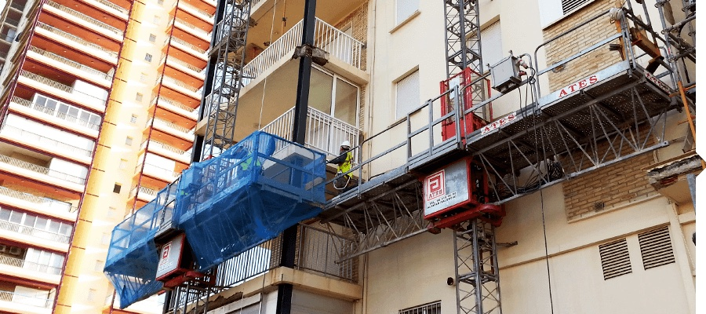
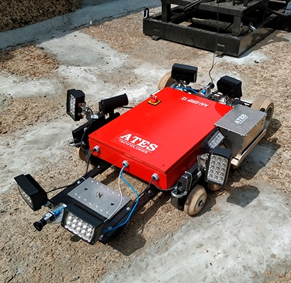
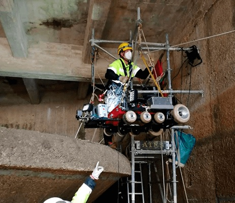
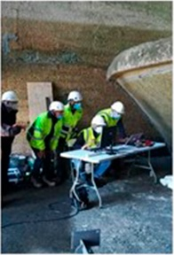
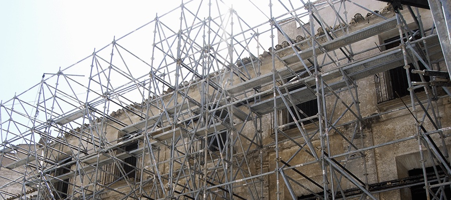
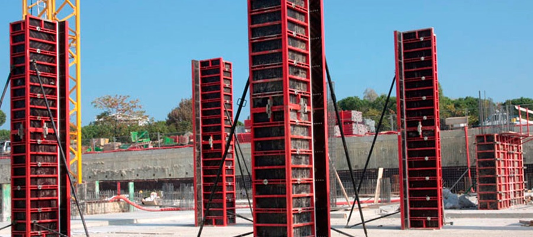
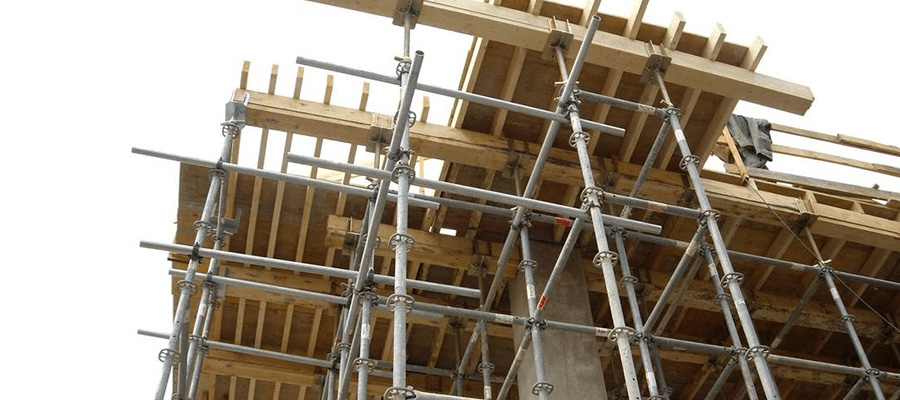
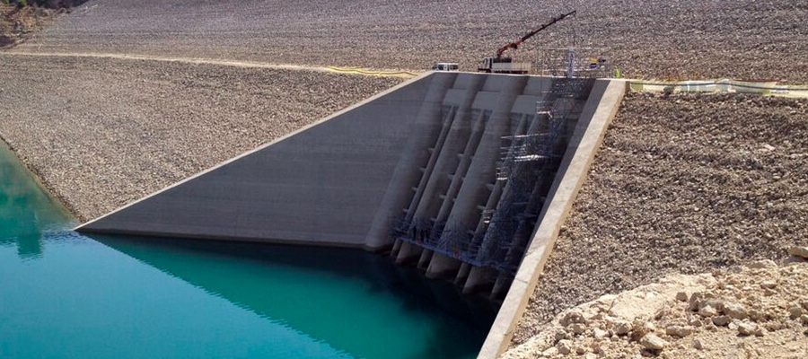
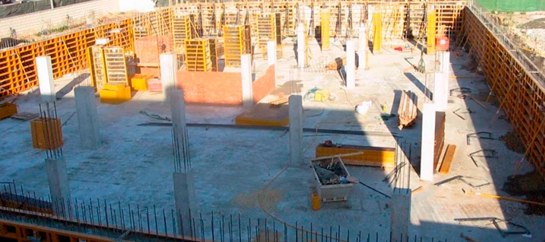

Maquinaria
Equipos de elevación y maquinaria para cada desafío.
Grúas torre y automontantes, montacargas de obra y un catálogo de maquinaria auxiliar en alquiler y venta.
Explorar maquinaria
Maquinaria · Construcción · Tecnología
Maquinaria, sistemas constructivos y tecnología para responder a los desafíos de la construcción y la industria.
Sobre ATES
ATES ofrece soluciones especializadas en maquinaria, construcción, elevación e innovación tecnológica. Un equipo profesional que combina experiencia, capacidad técnica y compromiso con cada proyecto, desde su fundación en 1968.

Áreas de negocio
Tres áreas especializadas que integran maquinaria, sistemas constructivos e innovación tecnológica.
Maquinaria
Grúas torre y automontantes, montacargas de obra y un catálogo de maquinaria auxiliar en alquiler y venta.
Explorar maquinaria
Construcción
Andamios, encofrados, cimbras y plataformas motorizadas, con estudio técnico de cada obra y equipo propio de montadores.
Explorar construcción
Tecnologías
Inspección de infraestructuras civiles e industriales mediante sistemas autónomos sensorizados.
Descubrir tecnologíasSoluciones destacadas
Una selección de los equipos y sistemas más demandados, cada uno con su página técnica.
Ver toda la maquinariaInnovación · ATES Technologies
Combinamos experiencia industrial, robótica, sensorización e inteligencia artificial para desarrollar soluciones avanzadas de inspección y análisis de infraestructuras.
Rover propio para inspeccionar grandes infraestructuras hidráulicas.
Seguimiento del comportamiento estructural mediante sensores.
Big Data, Deep Learning y Machine Learning aplicados a cada activo.
Inspección visual y modelo 3D del estado de la conducción.



Proyectos y experiencia
Trabajos publicados por ATES: andamiaje de gran altura, patrimonio histórico e inspección tecnológica de infraestructuras.

Andamiaje para la restauración integral de la escultura, permitiendo el acceso seguro a cada parte para su limpieza, saneado y pintado.
Leer el proyecto
Andamiaje para la conservación de este conjunto fortificado del siglo XII en Villel de Mesa (Guadalajara).
Leer el proyecto
Inspección visual y modelizado 3D desde el rover en una central hidroeléctrica de Zamora.
Leer el proyecto





Hablemos de tu proyecto
Cuéntanos qué necesitas y nuestro equipo te ayudará a encontrar la alternativa más adecuada.